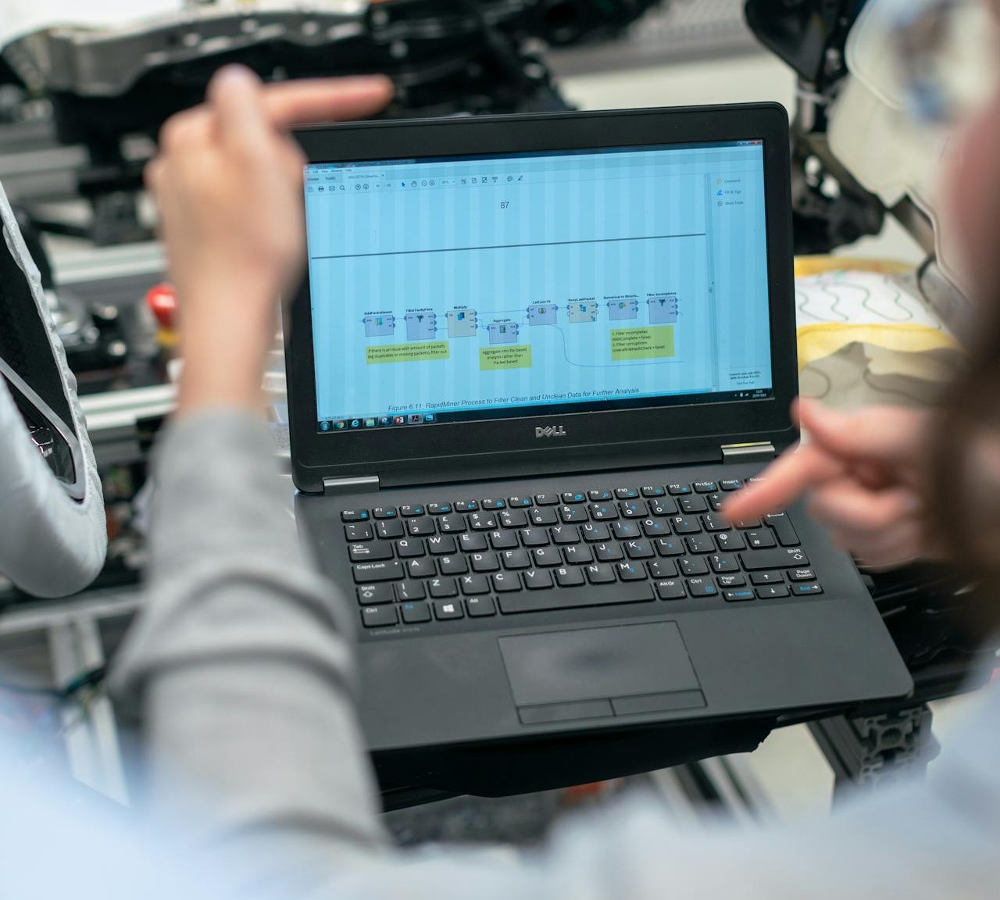

Distribuidoras
Gestao de pedidos, precificacao, estoque, entregas, comissoes e integracao fiscal para operacoes com alto volume.
Sistema ERP Infoline
Controle vendas, estoque, fiscal, financeiro, compras, WMS e PCPM em um sistema integrado. Reduza retrabalho, ganhe visibilidade da operacao e tome decisoes com dados confiaveis.

Sua busca no Google precisa encontrar uma mensagem clara. Por isso, deixamos explicito para quem o ERP foi posicionado.
Gestao de pedidos, precificacao, estoque, entregas, comissoes e integracao fiscal para operacoes com alto volume.
Mais controle sobre compras, custos, estoque e fluxo financeiro para empresas que precisam de rastreabilidade e margem.
Operacao comercial mais agil, com pedidos, faturamento, separacao e atendimento integrados para vender melhor.
PCPM, custos, engenharia, compras e financeiro conectados para dar previsibilidade e controle de ponta a ponta.
Em vez de listar tudo de forma generica, destacamos os modulos que mais pesam na decisao de compra de empresas B2B.
Orcamentos, pedidos, tabela de precos, previsao de vendas, notas fiscais e integracao automatica com estoque, financeiro e fiscal. Ideal para equipes comerciais que precisam vender com mais velocidade e menos retrabalho.
Apuracao de impostos, livros fiscais, lancamentos contabeis, contas a pagar e receber, fluxo de caixa, conciliacao bancaria e CNAB. Uma base unica para reduzir inconsistencias e melhorar a confianca nos numeros.
Solicitacoes, cotacoes, pedidos de compra, entrada de materiais, reserva de itens e rastreabilidade completa da movimentacao. Mais controle para importadoras, atacadistas e distribuidores que dependem de disponibilidade.
Enderecamento logistico, inventario, contagem, reserva, etiquetas e leitura por codigo de barras para acelerar separacao, conferencia e expedicao com mais acuracidade.
Planejamento e controle da producao, engenharia, calculo de custos, formacao de preco e controladoria. Um conjunto importante para industrias que precisam defender margem e ganhar previsibilidade operacional.

O visitante precisa entender rapido por que escolher voce e nao apenas o que o sistema faz.
Comercial, fiscal, financeiro, compras, estoque e industria trabalhando sobre a mesma base.
Mais aderencia para empresas que dependem de disponibilidade, separacao e faturamento sem erro.
Custos, precificacao e indicadores para apoiar decisoes mais seguras em operacoes complexas.
Atendimento consultivo para entender o processo da sua empresa e evoluir a operacao com voce.
Desde 2001, a Infoline atua com solucoes em software de gestao empresarial para empresas que precisam integrar operacoes, ganhar produtividade e ter mais confianca nas informacoes do negocio.
Atendemos operacoes na regiao Sul e apoiamos clientes com ERP, sistemas sob demanda e aplicativos, sempre com foco em aderencia ao processo, desempenho e relacionamento de longo prazo.

Esta secao ajuda o Google a entender melhor sua proposta e tira objecoes comuns do lead.
Sim. O ERP foi posicionado para empresas que dependem de pedido, estoque, faturamento, entrega, compras e acompanhamento financeiro integrados.
Sim. O Infoline oferece recursos para compras, custos, controladoria, PCPM, estoque e visibilidade operacional, o que apoia empresas com processos mais complexos.
Sim. Voce pode preencher o formulario ou chamar no WhatsApp para agendar uma apresentacao alinhada ao seu segmento.
Conte um pouco sobre sua operacao para nossa equipe entender se o Infoline faz sentido para distribuicao, importacao, atacado ou industria.
Telefone
+55 (41) 3014-0075E-mail comercial
comercial@infolinesystems.com.brRecebemos seus dados e entraremos em contato em breve.